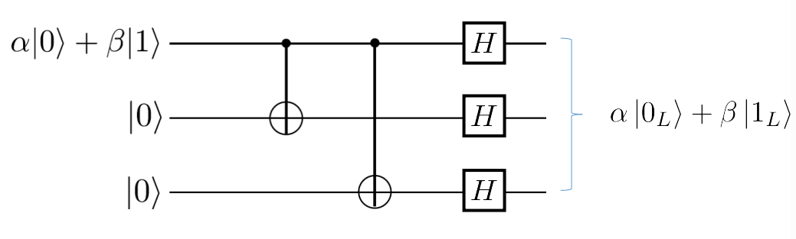
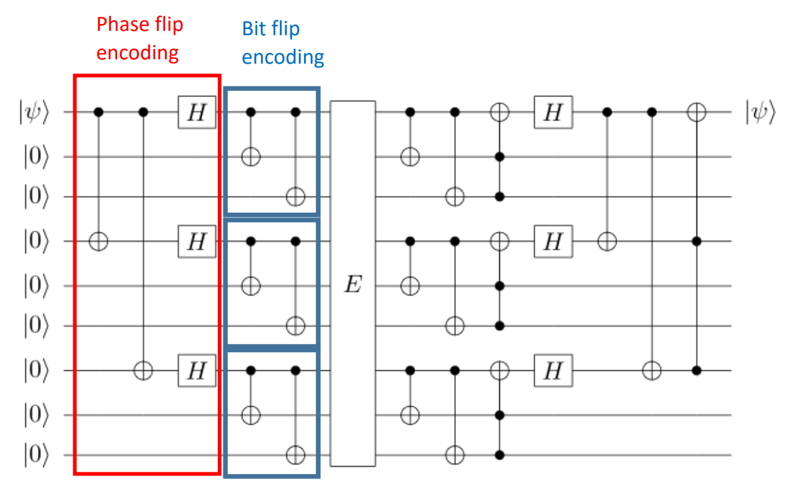

QIP1 Quantum Information Processing:Concept
professor : Jonathan Home
author : walkerchi
Quantum State
unitary : S † S = S S † = I S^\dagger S = SS^\dagger= I S † S = S S † = I Hermitian : S † = S S^\dagger=S S † = S projector : S S = S SS=S SS = S ⊗ \otimes ⊗
Bloch Sphere
∣ ψ ⟩ = α ∣ 0 ⟩ + β ∣ 1 ⟩ ∥ α ∥ 2 + ∥ β ∥ 2 = 1 = cos ( θ / 2 ) ∣ 0 ⟩ + e i ϕ sin ( θ / 2 ) ∣ 1 ⟩ = cos ( θ / 2 ) ∣ 0 ⟩ + ( cos ϕ + i sin ϕ ) sin ( θ / 2 ) ∣ 1 ⟩ \begin{aligned}
\ket \psi &=\alpha \ket 0 + \beta \ket 1 & \Vert \alpha \Vert^2 + \Vert \beta \Vert^2 = 1\\
&= \text{cos}(\theta/2)\ket 0 + e^{i\phi}\text{sin}(\theta/2)\ket 1
\\
&= \text{cos}(\theta/2)\ket 0 + (\text{cos}\phi + i~\text{sin}\phi) \text{sin}(\theta/2)\ket 1
\end{aligned}
∣ ψ ⟩ = α ∣ 0 ⟩ + β ∣ 1 ⟩ = cos ( θ /2 ) ∣ 0 ⟩ + e i ϕ sin ( θ /2 ) ∣ 1 ⟩ = cos ( θ /2 ) ∣ 0 ⟩ + ( cos ϕ + i sin ϕ ) sin ( θ /2 ) ∣ 1 ⟩ ∥ α ∥ 2 + ∥ β ∥ 2 = 1
z z z ∣ 0 ⟩ = [ 1 0 ] ∣ 1 ⟩ = [ 0 1 ] \ket 0 = \begin{bmatrix}1\\0\end{bmatrix}\quad \ket 1 = \begin{bmatrix}0\\1\end{bmatrix} ∣ 0 ⟩ = [ 1 0 ] ∣ 1 ⟩ = [ 0 1 ]
x x x ∣ + ⟩ = 1 2 [ 1 1 ] ∣ − ⟩ = 1 2 [ 1 − 1 ] \ket + = \frac{1}{\sqrt 2}\begin{bmatrix}1\\1\end{bmatrix}\quad \ket - = \frac{1}{\sqrt 2}\begin{bmatrix}1\\-1\end{bmatrix} ∣ + ⟩ = 2 1 [ 1 1 ] ∣ − ⟩ = 2 1 [ 1 − 1 ]
y y y ∣ + ⟩ y = 1 2 [ 1 i ] ∣ − ⟩ y = 1 2 [ 1 − i ] \ket +_y=\frac{1}{\sqrt 2}\begin{bmatrix}1\\i\end{bmatrix}\quad\ket -_y= \frac{1}{\sqrt 2}\begin{bmatrix}1\\-i\end{bmatrix} ∣ + ⟩ y = 2 1 [ 1 i ] ∣ − ⟩ y = 2 1 [ 1 − i ]
pauli matrices : σ ^ x = [ 0 1 1 0 ] σ ^ y = [ 0 − i i 0 ] σ ^ z = [ 1 0 0 − 1 ] \hat \sigma_x = \begin{bmatrix}0&1\\1&0\end{bmatrix}\quad \hat \sigma_y=\begin{bmatrix}0&-i\\i&0\end{bmatrix}\quad \hat \sigma_z = \begin{bmatrix}1&0\\0&-1\end{bmatrix} σ ^ x = [ 0 1 1 0 ] σ ^ y = [ 0 i − i 0 ] σ ^ z = [ 1 0 0 − 1 ]
No-cloning theorem
∄ U ^ ∀ ψ , ϕ U ( ∣ ψ ⟩ ⊗ ∣ 0 ⟩ ) = ∣ ψ ⟩ ⊗ ∣ ψ ⟩ U ( ∣ ϕ ⟩ ⊗ ∣ 0 ⟩ ) = ∣ ϕ ⟩ ⊗ ∣ ϕ ⟩ \not \exists \hat U ~\forall \psi,\phi \quad U(\ket \psi\otimes \ket 0) = \ket \psi \otimes \ket\psi\quad U(\ket\phi\otimes \ket 0)=\ket \phi\otimes\ket \phi
∃ U ^ ∀ ψ , ϕ U ( ∣ ψ ⟩ ⊗ ∣ 0 ⟩ ) = ∣ ψ ⟩ ⊗ ∣ ψ ⟩ U ( ∣ ϕ ⟩ ⊗ ∣ 0 ⟩ ) = ∣ ϕ ⟩ ⊗ ∣ ϕ ⟩
Entanglement
∣ Ψ ⟩ A B ≠ ∣ α ⟩ A ⊗ ∣ β ⟩ B \ket {\Psi}_{AB} \neq \ket \alpha_A \otimes \ket \beta_B
∣ Ψ ⟩ A B = ∣ α ⟩ A ⊗ ∣ β ⟩ B
Bell states : maximally entangled states for two qubits
∣ Φ + ⟩ = 1 2 ( ∣ 00 ⟩ + ∣ 11 ⟩ ) ∣ Ψ + ⟩ = 1 2 ( ∣ 01 ⟩ + ∣ 10 ⟩ ) ∣ Φ − ⟩ = 1 2 ( ∣ 00 ⟩ − ∣ 11 ⟩ ) ∣ Ψ − ⟩ = 1 2 ( ∣ 01 ⟩ − ∣ 10 ⟩ ) \begin{matrix}
\ket {\Phi^+} = \frac{1}{\sqrt 2}(\ket {00}+\ket {11})&
\ket {\Psi^+} = \frac{1}{\sqrt 2}(\ket {01}+\ket {10})\\
\ket {\Phi^-} = \frac{1}{\sqrt 2}(\ket {00} - \ket {11})&
\ket {\Psi^-} = \frac{1}{\sqrt 2}(\ket {01} - \ket {10})
\end{matrix}
∣ Φ + ⟩ = 2 1 ( ∣ 00 ⟩ + ∣ 11 ⟩ ) ∣ Φ − ⟩ = 2 1 ( ∣ 00 ⟩ − ∣ 11 ⟩ ) ∣ Ψ + ⟩ = 2 1 ( ∣ 01 ⟩ + ∣ 10 ⟩ ) ∣ Ψ − ⟩ = 2 1 ( ∣ 01 ⟩ − ∣ 10 ⟩ )
identify entanglement : more than 1 non-zero eigen values ∃ λ 1 , λ 2 ≠ 0 \exist \lambda_1,\lambda_2 \neq 0 ∃ λ 1 , λ 2 = 0
product state : ∣ Ψ ⟩ A B = ∣ α ⟩ A ⊗ ∣ β ⟩ B \ket \Psi_{AB} = \ket \alpha_A \otimes \ket \beta_B ∣ Ψ ⟩ A B = ∣ α ⟩ A ⊗ ∣ β ⟩ B
Schmidt decomposition : ∣ Ψ ⟩ ∈ H 1 ⊗ H 2 → ∣ Ψ ⟩ = ∑ i = 1 m λ i ∣ u i ⟩ ⊗ ∣ v i ⟩ ∣ u i ⟩ ∈ H 1 , ∣ v i ⟩ ∈ H 2 \ket\Psi\in \mathcal H_1\otimes \mathcal H_2\to \ket\Psi = \sum_{i=1}^m \lambda_i\ket {u_i}\otimes \ket{v_i}\quad \ket {u_i}\in \mathcal H_1,\ket{v_i}\in \mathcal H_2 ∣ Ψ ⟩ ∈ H 1 ⊗ H 2 → ∣ Ψ ⟩ = ∑ i = 1 m λ i ∣ u i ⟩ ⊗ ∣ v i ⟩ ∣ u i ⟩ ∈ H 1 , ∣ v i ⟩ ∈ H 2
Bell Inequality
location A A A
location B B B
CHSH inequatlity
Q = ± 1 R = ± 1 Q=\pm 1\quad R=\pm 1 Q = ± 1 R = ± 1 S = ± 1 T = ± 1 S=\pm 1\quad T=\pm 1 S = ± 1 T = ± 1 ⟨ Q S ⟩ + ⟨ R T ⟩ + ⟨ R S ⟩ − ⟨ Q T ⟩ ≤ 2 \langle QS\rangle+\langle RT\rangle+\langle RS\rangle-\langle QT\rangle\le 2 ⟨ QS ⟩ + ⟨ RT ⟩ + ⟨ RS ⟩ − ⟨ QT ⟩ ≤ 2
Quantum Violation
Q ^ = σ ^ z ⊗ I R ^ = σ ^ x ⊗ I \hat Q = \hat\sigma_z\otimes I\\\hat R=\hat \sigma_x\otimes I\\ Q ^ = σ ^ z ⊗ I R ^ = σ ^ x ⊗ I S ^ = − 1 2 I ^ ⊗ ( σ ^ z + σ ^ x ) T ^ = 1 2 I ^ ⊗ ( σ ^ z − σ ^ x ) \hat S=\frac{-1}{\sqrt 2}\hat I\otimes(\hat \sigma_z+\hat \sigma_x)\\ \hat T = \frac{1}{\sqrt 2}\hat I\otimes (\hat \sigma_z -\hat \sigma_x) S ^ = 2 − 1 I ^ ⊗ ( σ ^ z + σ ^ x ) T ^ = 2 1 I ^ ⊗ ( σ ^ z − σ ^ x ) ⟨ Q S ⟩ + ⟨ R T ⟩ + ⟨ R S ⟩ − ⟨ Q T ⟩ = 2 2 > 2 \langle QS\rangle+\langle RT\rangle+\langle RS\rangle-\langle QT\rangle =2\sqrt 2>2 ⟨ QS ⟩ + ⟨ RT ⟩ + ⟨ RS ⟩ − ⟨ QT ⟩ = 2 2 > 2
Quantum Gate
Rotation
R x ( θ ) = e − i θ X / 2 = cos ( θ / 2 ) I − i s i n ( θ / 2 ) X = [ cos ( θ / 2 ) − i sin ( θ / 2 ) − i sin ( θ / 2 ) cos ( θ / 2 ) ] R_x(\theta) = e^{-i\theta X/2}= \text{cos}(\theta/2)I - i~sin(\theta/2)X=\begin{bmatrix}\text{cos}(\theta/2)&-i~\text{sin}(\theta/2)\\-i~\text{sin}(\theta/2)&\text{cos}(\theta/2)\end{bmatrix} R x ( θ ) = e − i θX /2 = cos ( θ /2 ) I − i s in ( θ /2 ) X = [ cos ( θ /2 ) − i sin ( θ /2 ) − i sin ( θ /2 ) cos ( θ /2 ) ] R y ( θ ) = e − i θ Y / 2 = cos ( θ / 2 ) I − i s i n ( θ / 2 ) Y = [ cos ( θ / 2 ) − sin ( θ / 2 ) sin ( θ / 2 ) cos ( θ / 2 ) ] R_y(\theta) = e^{-i\theta Y/2}= \text{cos}(\theta/2)I - i~sin(\theta/2)Y=\begin{bmatrix}\text{cos}(\theta/2)&-~\text{sin}(\theta/2)\\\text{sin}(\theta/2)&\text{cos}(\theta/2)\end{bmatrix} R y ( θ ) = e − i θ Y /2 = cos ( θ /2 ) I − i s in ( θ /2 ) Y = [ cos ( θ /2 ) sin ( θ /2 ) − sin ( θ /2 ) cos ( θ /2 ) ] R z ( θ ) = e − i θ Z / 2 = cos ( θ / 2 ) I − i s i n ( θ / 2 ) Z = [ e − i θ / 2 0 0 e i θ / 2 ] R_z(\theta) = e^{-i\theta Z/2}= \text{cos}(\theta/2)I - i~sin(\theta/2)Z=\begin{bmatrix}e^{-i\theta/2}&0\\0&e^{i\theta/2}\end{bmatrix} R z ( θ ) = e − i θZ /2 = cos ( θ /2 ) I − i s in ( θ /2 ) Z = [ e − i θ /2 0 0 e i θ /2 ]
Pauli Gates
σ { x , y , z } \sigma_{\{x,y,z\}} σ { x , y , z } { x , y , z } \{x,y,z\} { x , y , z } π \pi π
Hadamard Gate
H H H 1 2 ( x ^ + z ^ ) \frac{1}{\sqrt 2}(\hat x +\hat z) 2 1 ( x ^ + z ^ ) π \pi π
H ∣ 0 ⟩ = 1 2 ( ∣ 0 ⟩ + ∣ 1 ⟩ ) = ∣ + ⟩ H\ket 0 = \frac{1}{\sqrt 2}(\ket 0 + \ket 1) = \ket + H ∣ 0 ⟩ = 2 1 ( ∣ 0 ⟩ + ∣ 1 ⟩ ) = ∣ + ⟩ H ∣ 1 ⟩ = 1 2 ( ∣ 0 ⟩ − ∣ 1 ⟩ ) = ∣ − ⟩ H\ket 1 = \frac{1}{\sqrt 2}(\ket 0 - \ket 1) = \ket - H ∣ 1 ⟩ = 2 1 ( ∣ 0 ⟩ − ∣ 1 ⟩ ) = ∣ − ⟩ H ∣ x ⟩ = 1 2 ( ∣ 0 ⟩ + ( − 1 ) x ∣ 1 ⟩ ) H \ket x = \frac{1}{\sqrt 2} (\ket 0 + (-1)^x\ket 1) H ∣ x ⟩ = 2 1 ( ∣ 0 ⟩ + ( − 1 ) x ∣ 1 ⟩ ) H ⊗ n ∣ x ⟩ = 1 2 n ∑ y ∈ { 0 , 1 } n ( − 1 ) x ⋅ y ∣ y ⟩ H^{\otimes n}\ket x = \frac{1}{\sqrt{2^n}}\sum_{y\in\{0,1\}^n}(-1)^{x\cdot y}\ket y H ⊗ n ∣ x ⟩ = 2 n 1 ∑ y ∈ { 0 , 1 } n ( − 1 ) x ⋅ y ∣ y ⟩
Two qubits Gate
CNOT = ∣ 0 ⟩ c ⟨ 0 ∣ c ⊗ I ^ t + ∣ 1 ⟩ c ⟨ 1 ∣ c ⊗ X ^ t \text{CNOT} = \ket 0_c\bra 0_c \otimes \hat I_t + \ket 1_c \bra 1_c \otimes \hat X_t CNOT = ∣ 0 ⟩ c ⟨ 0 ∣ c ⊗ I ^ t + ∣ 1 ⟩ c ⟨ 1 ∣ c ⊗ X ^ t
CPAHSE = ∣ 0 ⟩ c ⟨ 0 ∣ c ⊗ I ^ t + ∣ 1 ⟩ c ⟨ 1 ∣ c ⊗ Z ^ t \text{CPAHSE} = \ket 0_c\bra0_c \otimes \hat I_t + \ket 1_c\bra 1_c\otimes \hat Z_t CPAHSE = ∣ 0 ⟩ c ⟨ 0 ∣ c ⊗ I ^ t + ∣ 1 ⟩ c ⟨ 1 ∣ c ⊗ Z ^ t
Matrix Table
Operator
Matrix
Operator
Matrix
Operator
Matrix
Pauli-x (σ x \sigma_x σ x
[ 0 1 1 0 ] \begin{bmatrix} 0 & 1 \\ 1 & 0\end{bmatrix} [ 0 1 1 0 ] Pauli-Y (σ y \sigma_y σ y
[ 0 − i i 0 ] \begin{bmatrix}0 &-i\\ i & 0\end{bmatrix} [ 0 i − i 0 ] Pauli-Z (σ z \sigma_z σ z
[ 1 0 0 − 1 ] \begin{bmatrix}1 & 0\\0 &-1\end{bmatrix} [ 1 0 0 − 1 ]
Hadamard (H H H
1 2 [ 1 1 1 − 1 ] \frac{1}{\sqrt{2}}\begin{bmatrix} 1 & 1 \\ 1 & -1\end{bmatrix} 2 1 [ 1 1 1 − 1 ] Identity (I I I
[ 1 0 0 1 ] \begin{bmatrix}1&0\\0&1\end{bmatrix} [ 1 0 0 1 ]
Phase (S S S P P P
[ 1 0 0 i ] \begin{bmatrix}1 & 0 \\0 & i\end{bmatrix} [ 1 0 0 i ] π 8 \frac{\pi}{8} 8 π T T T [ 1 0 0 e i π / 4 ] \begin{bmatrix}1 & 0 \\ 0 & e^{i\pi / 4} \end{bmatrix} [ 1 0 0 e iπ /4 ]
Controlled Not (C N O T CNOT CNOT C X CX CX
[ 1 0 0 0 0 1 0 0 0 0 0 1 0 0 1 0 ] \begin{bmatrix}1 & 0 & 0 & 0 \\ 0 & 1 & 0 & 0\\ 0& 0 & 0 & 1\\ 0 & 0 & 1 & 0\end{bmatrix} 1 0 0 0 0 1 0 0 0 0 0 1 0 0 1 0 Controlled Z (C Z CZ CZ C S I G N CSIGN CS I GN C P H A S E CPHASE CP H A SE
[ 1 0 0 0 0 1 0 0 0 0 1 0 0 0 0 − 1 ] \begin{bmatrix}1&0&0&0\\0&1&0&0\\0&0&1&0\\0&0&0&-1\end{bmatrix} 1 0 0 0 0 1 0 0 0 0 1 0 0 0 0 − 1 SWAP
[ 1 0 0 0 0 0 1 0 0 1 0 0 0 0 0 1 ] \begin{bmatrix}1&0&0&0\\0&0&1&0\\0&1&0&0\\0&0&0&1\end{bmatrix} 1 0 0 0 0 0 1 0 0 1 0 0 0 0 0 1
Universal quantum gates
Rotation gates R x ( θ ) , R y ( θ ) , R z ( θ ) R_x(\theta),R_y(\theta),R_z(\theta) R x ( θ ) , R y ( θ ) , R z ( θ ) P ( ϕ ) P(\phi) P ( ϕ )
{ CNOT , H , T } \{\text{CNOT},H,T\} { CNOT , H , T } { CNOT } ∪ U ( 2 ) \{\text{CNOT}\}\cup \mathcal U(2) { CNOT } ∪ U ( 2 ) { Toffoli(CCNOT) , H } \{\text{Toffoli(CCNOT)},H\} { Toffoli(CCNOT) , H }
Clifford group : C n = { U ∈ U ( 2 n ) : ∀ P ∈ P n : U P U † ∈ P n } \mathcal C_n = \left\{U\in \mathcal U(2^n):\forall P\in\mathcal P_n:UPU^{\dagger}\in \mathcal P_n\right\} C n = { U ∈ U ( 2 n ) : ∀ P ∈ P n : U P U † ∈ P n } U \mathcal U U
Algorithms
Complexity
complexity class
problem
polynomial in time/space
classical / quantum
P decision problem
time
classical
BPP probabilistic algorithm failure at most 1 3 \frac{1}{3} 3 1
time
classical
NP proof the answer is yes
time
classical
PSPACE decision problem
space
classical
BQP decision problem failure at most 1 3 \frac{1}{3} 3 1
time
quantum
BPP ⊂ BQP \text{BPP}\subset \text{BQP} BPP ⊂ BQP P ⊂ BPP \text P\subset \text{BPP} P ⊂ BPP P ⊂ NP ⊂ PSAPCE \text P\subset \text{NP}\subset \text{PSAPCE} P ⊂ NP ⊂ PSAPCE
Oracle
Phase oracle : U f ∣ x ⟩ = ( − 1 ) f ( x ) ∣ x ⟩ U_f\ket x = (-1)^{f(x)}\ket x U f ∣ x ⟩ = ( − 1 ) f ( x ) ∣ x ⟩
O f ∣ y ⟩ ∣ x ⟩ = ∣ y ⊕ f ( x ) ⟩ ∣ x ⟩ O f ∣ − ⟩ ∣ x ⟩ = O f 1 2 ( ∣ 0 ⟩ − ∣ 1 ⟩ ) ∣ x ⟩ = 1 2 ( ∣ f ( x ) ⟩ − ∣ 1 ⊕ f ( x ) ⟩ ) ∣ x ⟩ = ( − 1 ) f ( x ) ∣ − ⟩ ∣ x ⟩ \begin{aligned}
O_f\ket y\ket x &= \ket {y\oplus f(x)}\ket x\\
O_f\ket -\ket x &= O_f\frac{1}{\sqrt 2}(\ket 0 - \ket 1)\ket x\\
&= \frac{1}{\sqrt 2}(\ket {f(x)} - \ket{1\oplus f(x)})\ket x\\
&= (-1)^{f(x)}\ket -\ket x
\end{aligned}
O f ∣ y ⟩ ∣ x ⟩ O f ∣ − ⟩ ∣ x ⟩ = ∣ y ⊕ f ( x ) ⟩ ∣ x ⟩ = O f 2 1 ( ∣ 0 ⟩ − ∣ 1 ⟩ ) ∣ x ⟩ = 2 1 ( ∣ f ( x ) ⟩ − ∣ 1 ⊕ f ( x ) ⟩ ) ∣ x ⟩ = ( − 1 ) f ( x ) ∣ − ⟩ ∣ x ⟩
Bit oracle : O f ∣ y ⟩ ∣ x ⟩ = ∣ y ⊕ f ( x ) ⟩ ∣ x ⟩ O_f\ket y\ket x = \ket {y\oplus f(x)}\ket x O f ∣ y ⟩ ∣ x ⟩ = ∣ y ⊕ f ( x ) ⟩ ∣ x ⟩
Deutsch-Josza
Distinguish f ( x ) f(x) f ( x ) constant function or balanced function. O ( N ) → O ( 1 ) \mathcal O(N) \to \mathcal O(1) O ( N ) → O ( 1 )
⟨ 0 ∣ ⊗ n H ⊗ n U f H ⊗ n ∣ 0 ⟩ ⊗ n = ⟨ 0 ∣ ⊗ n H ⊗ n U f ( 1 2 n ∑ x ∈ { 0 , 1 } n ∣ x ⟩ ) ⏟ H ⊗ n ∣ 0 ⟩ ⊗ n = ⟨ 0 ∣ ⊗ n H ⊗ n ( 1 2 n ∑ x ∈ { 0 , 1 } n ( − 1 ) f ( x ) ∣ x ⟩ ) = ⟨ 0 ∣ ⊗ n 1 2 n ∑ x ∈ { 0 , 1 } n ( − 1 ) f ( x ) ( 1 2 n ∑ y ∈ { 0 , 1 } n ( − 1 ) x ⋅ y ∣ y ⟩ ) = 1 2 n ∑ x , y ∈ { 0 , 1 } n ( − 1 ) f ( x ) ( − 1 ) x ⋅ y ⟨ 0 ⊗ n ∣ ∣ y ⟩ = 1 2 n ∑ x ∈ { 0 , 1 } n ( − 1 ) f ( x ) = { 0 f ( x ) is balanced ± 1 f ( x ) is constant \begin{aligned}
\bra 0 ^{\otimes n} H^{\otimes n}U_f H^{\otimes n}\ket 0^{\otimes n}
&= \bra 0 ^{\otimes n}H^{\otimes n} \textcolor{orange}{U_f}\underbrace{\left(\frac{1}{\sqrt {2^n}}\sum_{x\in\{0,1\}^n}\ket x\right)}_{H^{\otimes n}\ket 0^{\otimes n}}\\
&= \bra 0 ^{\otimes n}\textcolor{cyan}{H^{\otimes n}}\left(\frac{1}{\sqrt{2^n}}\sum_{x\in\{0,1\}^n}\textcolor{orange}{(-1)^{f(x)}}\ket x\right)\\
&= \bra 0 ^{\otimes n}\textcolor{cyan}{\frac{1}{\sqrt{2^n}}\sum_{x\in\{0,1\}^n}}\textcolor{orange}{(-1)^{f(x)}}\left(\frac{1}{\sqrt {2^n}}\sum_{y\in\{0,1\}^n}\textcolor{cyan}{(-1)^{x\cdot y}}\ket y\right)\\
&= \frac{1}{2^n}\sum_{x, y \in\{0,1\}^n}\textcolor{orange}{(-1)^{f(x)}} (-1)^{x\cdot y} \bra {0^{\otimes n}} \ket {y}\\
& = \frac{1}{2^n}\sum_{x\in\{0,1\}^n}\textcolor{orange}{(-1)^{f(x)}}\\
&=\begin{cases}
0 & f(x)~\text{is balanced}
\\
\pm 1 & f(x)~\text{is constant}
\end{cases}
\end{aligned}
⟨ 0 ∣ ⊗ n H ⊗ n U f H ⊗ n ∣ 0 ⟩ ⊗ n = ⟨ 0 ∣ ⊗ n H ⊗ n U f H ⊗ n ∣ 0 ⟩ ⊗ n 2 n 1 x ∈ { 0 , 1 } n ∑ ∣ x ⟩ = ⟨ 0 ∣ ⊗ n H ⊗ n 2 n 1 x ∈ { 0 , 1 } n ∑ ( − 1 ) f ( x ) ∣ x ⟩ = ⟨ 0 ∣ ⊗ n 2 n 1 x ∈ { 0 , 1 } n ∑ ( − 1 ) f ( x ) 2 n 1 y ∈ { 0 , 1 } n ∑ ( − 1 ) x ⋅ y ∣ y ⟩ = 2 n 1 x , y ∈ { 0 , 1 } n ∑ ( − 1 ) f ( x ) ( − 1 ) x ⋅ y ⟨ 0 ⊗ n ∣ ∣ y ⟩ = 2 n 1 x ∈ { 0 , 1 } n ∑ ( − 1 ) f ( x ) = { 0 ± 1 f ( x ) is balanced f ( x ) is constant
Notation :
n n n N N N N = 2 n N = 2^n N = 2 n H H H
Grover
find the unique x 0 x_0 x 0 f ( x 0 ) = 1 f : { 1 , ⋯ , N } → { 0 , 1 } f(x_0)=1\quad f:\{1,\cdots,N\}\to \{0,1\} f ( x 0 ) = 1 f : { 1 , ⋯ , N } → { 0 , 1 } O ( N ) → O ( N ) O(N)\to O(\sqrt N) O ( N ) → O ( N )
oracle operator : U f = I − 2 ∣ x 0 ⟩ ⟨ x 0 ∣ U 0 = I − 2 ∣ 0 ⟩ ⊗ n ⟨ 0 ∣ ⊗ n U_f = I - 2\ket {x_0}\bra{x_0}\quad U_0 = I -2\ket 0 ^{\otimes n}\bra 0^{\otimes n} U f = I − 2 ∣ x 0 ⟩ ⟨ x 0 ∣ U 0 = I − 2 ∣ 0 ⟩ ⊗ n ⟨ 0 ∣ ⊗ n **grover diffusion **: U s = H ⊗ n ( − U 0 ) H ⊗ n = 2 ∣ + n ⟩ ⟨ + n ∣ − I U_s = H^{\otimes n}(-U_0)H^{\otimes n} = 2\ket {+^n}\bra{+^n} - I U s = H ⊗ n ( − U 0 ) H ⊗ n = 2 ∣ + n ⟩ ⟨ + n ∣ − I
Reflection
Reflection about ∣ ψ ⊥ ⟩ \ket{\psi_\perp} ∣ ψ ⊥ ⟩ R ψ ⊥ ∣ ϕ ⟩ = ( I − 2 ∣ ψ ⟩ ⟨ ψ ∣ ) ( α ∣ ψ ⟩ + β ∣ ψ ⊥ ⟩ ) = − α ∣ ψ ⟩ + β ∣ ψ ⊥ ⟩ R_{\psi_\perp} \ket{\phi} = (I-2\ket \psi\bra\psi)~(\alpha\ket \psi +\beta \ket {\psi_\perp})
=-\alpha\ket\psi +\beta \ket {\psi_\perp} R ψ ⊥ ∣ ϕ ⟩ = ( I − 2 ∣ ψ ⟩ ⟨ ψ ∣ ) ( α ∣ ψ ⟩ + β ∣ ψ ⊥ ⟩ ) = − α ∣ ψ ⟩ + β ∣ ψ ⊥ ⟩
U f = R x 0 ⊥ U_f=R_{x_{0}^\perp} U f = R x 0 ⊥ ∣ x 0 ⊥ ⟩ \ket {x_0^\perp} ∣ x 0 ⊥ ⟩
Reflection about ∣ ψ ⟩ \ket {\psi} ∣ ψ ⟩ R ψ ∣ ϕ ⟩ = ( 2 ∣ ψ ⟩ ⟨ ψ ∣ − I ) ( α ∣ ψ ⟩ + β ∣ ψ ⊥ ⟩ ) = α ∣ ψ ⟩ − β ∣ ψ ⊥ ⟩ R_{\psi} \ket\phi =(2\ket \psi\bra\psi-I)~(\alpha\ket \psi +\beta\ket{\psi_\perp})
=\alpha\ket\psi -\beta\ket{\psi_\perp} R ψ ∣ ϕ ⟩ = ( 2 ∣ ψ ⟩ ⟨ ψ ∣ − I ) ( α ∣ ψ ⟩ + β ∣ ψ ⊥ ⟩ ) = α ∣ ψ ⟩ − β ∣ ψ ⊥ ⟩
U s = R + U_s=R_{+} U s = R + ∣ + n ⟩ \ket {+^n} ∣ + n ⟩
⟨ x 0 ∣ U s U f ∣ ϕ ⟩ = cos ( arccos ( ⟨ x 0 ∣ ∣ ϕ ⟩ ) − 2 arcsin ( ⟨ x 0 ∣ ∣ + ⟩ ) ) ⟨ x 0 ∣ ( U s U f ) r ∣ + n ⟩ = cos ( arccos ( ⟨ x 0 ∣ ∣ + ⟩ ) − 2 r arcsin ( ⟨ x 0 ∣ ∣ + ⟩ ) ) \begin{aligned}
\bra{x_0} U_sU_f\ket \phi &= \text{cos}\left(\text{arccos}(\bra{x_0}\ket{\phi})-2\text{arcsin}(\bra{x_0}\ket {+})\right)
\\
\bra{x_0}(U_sU_f)^r\ket {+^n} &=
\text{cos}(\text{arccos}(\bra{x_0}\ket{+})-2r~\text{arcsin}(\bra{x_0}\ket{+}))
\end{aligned}
⟨ x 0 ∣ U s U f ∣ ϕ ⟩ ⟨ x 0 ∣ ( U s U f ) r ∣ + n ⟩ = cos ( arccos ( ⟨ x 0 ∣ ∣ ϕ ⟩ ) − 2 arcsin ( ⟨ x 0 ∣ ∣ + ⟩ ) ) = cos ( arccos ( ⟨ x 0 ∣ ∣ + ⟩ ) − 2 r arcsin ( ⟨ x 0 ∣ ∣ + ⟩ ))
⇒ r = arccos ( 1 N ) 2 arcsin ( 1 N ) ≈ π N 4 \Rightarrow r = \frac{\text{arccos}(\frac{1}{\sqrt N})}{2~\text{arcsin}(\frac{1}{\sqrt N})}\approx \frac{\pi\sqrt N}{4}
⇒ r = 2 arcsin ( N 1 ) arccos ( N 1 ) ≈ 4 π N
Algorithm
∣ Ψ ⟩ ← H ⊗ n ∣ 0 ⟩ ⊗ n \ket \Psi\gets H^{\otimes n}\ket 0^{\otimes n} ∣ Ψ ⟩ ← H ⊗ n ∣ 0 ⟩ ⊗ n ∣ Ψ ⟩ = ∣ + n ⟩ \ket\Psi = \ket {+^n} ∣ Ψ ⟩ = ∣ + n ⟩ for r r r r = artcos ( 1 N ) 2 arcsin ( 1 N ) r=\frac{\text{artcos}(\frac{1}{\sqrt N})}{2\text{arcsin}(\frac{1}{\sqrt N})} r = 2 arcsin ( N 1 ) artcos ( N 1 )
∣ Ψ ⟩ ← U s U f ∣ Ψ ⟩ \ket\Psi \gets U_sU_f\ket \Psi ∣ Ψ ⟩ ← U s U f ∣ Ψ ⟩
measure ∣ Ψ ⟩ \ket \Psi ∣ Ψ ⟩ x 0 x_0 x 0
Notation
n n n N N N N = 2 n N = 2^n N = 2 n ∣ + n ⟩ = 1 2 n ∑ x = { 0 , 1 } n ∣ x ⟩ = 1 N ∑ x = { 0 , 1 } n ∣ x ⟩ \ket {+^n} = \frac{1}{\sqrt {2^n}}\underset{x=\{0,1\}^n}{\sum} \ket x = \frac{1}{\sqrt N} \underset{x=\{0,1\}^n}{\sum}\ket x ∣ + n ⟩ = 2 n 1 x = { 0 , 1 } n ∑ ∣ x ⟩ = N 1 x = { 0 , 1 } n ∑ ∣ x ⟩
Q N ∣ x ⟩ = 1 N ∑ y = 0 N − 1 e 2 π i x y / N ∣ y ⟩ Q_N \ket x = \frac{1}{\sqrt N}\overset{N-1}{\underset{y=0}{\sum}}e^{2\pi ixy /N}\ket y Q N ∣ x ⟩ = N 1 y = 0 ∑ N − 1 e 2 πi x y / N ∣ y ⟩ O ( N log N ) → O ( n 2 ) \mathcal O(N\text{log}N)\to \mathcal O(n^2) O ( N log N ) → O ( n 2 )
Q N ∣ x ⟩ = 1 N ∑ y ∈ { 0 , 1 } n e 2 π i x y / N ∣ y ⟩ = 1 N ∑ y ∈ { 0 , 1 } n e 2 π i x ∑ k n 2 k y k / N ∣ y n − 1 ⟩ ⋯ ∣ y 0 ⟩ ⏟ single bits of e 2 π i x y / N = 1 N ⊗ j = 1 n ( ∑ y n − j ∈ { 0 , 1 } e 2 π i x y n − j / 2 j ∣ y n − j ⟩ ) = 1 N ( ∣ 0 n − 1 ⟩ + e . x 0 2 π i ∣ 1 n − 1 ⟩ ) ⊗ ( ∣ 0 n − 2 ⟩ + e . x 1 x 0 2 π i ∣ 1 n − 2 ⟩ ) ⋯ ( ∣ 0 0 ⟩ + e . x n − 1 ⋯ x 0 2 π i ∣ 1 0 ⟩ ) = 1 N ( H ∣ x 0 ⟩ ) ⊗ ( R 1 H ∣ x 1 ⟩ ) … ( R n − 1 … R 1 H ∣ x n − 1 ⟩ ) \begin{aligned}
Q_N \ket x &= \frac{1}{\sqrt N}\sum_{y\in\{0,1\}^n}e^{2\pi ixy/N}\ket y
\\
&= \frac{1}{\sqrt N}\sum_{y\in\{0,1\}^n}\underbrace{e^{2\pi ix\sum_k^n 2^k y_k/N}\ket {y_{n-1}}\cdots\ket {y_0}}_{\text{single bits of } e^{2\pi i xy/ N} }
\\
&= \frac{1}{\sqrt N}\otimes_{j=1}^n\left(\sum_{y_{n-j}\in\{0,1\}}e^{2\pi ixy_{n-j}/2^j}\ket{y_{n-j}}\right)
\\
&=\frac{1}{\sqrt N}(\ket {0_{n-1}} + e^{.x_02\pi i}\ket {1_{n-1}})\otimes(\ket {0_{n-2}}+e^{.x_1x_0 2\pi i }\ket {1_{n-2}})\cdots(\ket {0_0}+e^{.x_{n-1}\cdots x_0 2\pi i}\ket {1_0})
\\
& = \frac{1}{\sqrt N}(H\ket {x_0})\otimes (R_1 H\ket {x_1}) \dots(R_{n-1}\dots R_1H\ket {x_{n-1}})
\end{aligned}
Q N ∣ x ⟩ = N 1 y ∈ { 0 , 1 } n ∑ e 2 πi x y / N ∣ y ⟩ = N 1 y ∈ { 0 , 1 } n ∑ single bits of e 2 πi x y / N e 2 πi x ∑ k n 2 k y k / N ∣ y n − 1 ⟩ ⋯ ∣ y 0 ⟩ = N 1 ⊗ j = 1 n y n − j ∈ { 0 , 1 } ∑ e 2 πi x y n − j / 2 j ∣ y n − j ⟩ = N 1 ( ∣ 0 n − 1 ⟩ + e . x 0 2 πi ∣ 1 n − 1 ⟩ ) ⊗ ( ∣ 0 n − 2 ⟩ + e . x 1 x 0 2 πi ∣ 1 n − 2 ⟩ ) ⋯ ( ∣ 0 0 ⟩ + e . x n − 1 ⋯ x 0 2 πi ∣ 1 0 ⟩ ) = N 1 ( H ∣ x 0 ⟩ ) ⊗ ( R 1 H ∣ x 1 ⟩ ) … ( R n − 1 … R 1 H ∣ x n − 1 ⟩ )
Number of gates in QFT of n n n
C R j CR_j C R j R j R_j R j n ( n − 1 ) 2 \frac{n(n-1)}{2} 2 n ( n − 1 ) SWAP : n 2 \frac{n}{2} 2 n ∣ y 0 y 1 y 2 y 3 ⟩ → ∣ y 3 y 2 y 1 y 0 ⟩ \ket{y_0y_1y_2y_3}\to\ket{y_3y_2y_1y_0} ∣ y 0 y 1 y 2 y 3 ⟩ → ∣ y 3 y 2 y 1 y 0 ⟩
H H H n n n
Notation
n n n N N N N = 2 n N = 2^n N = 2 n R d R_d R d R d = [ 1 0 0 e π i / 2 d ] R_d = \begin{bmatrix}
1 & 0\\
0 & e^{\pi i/2^{d}}
\end{bmatrix} R d = [ 1 0 0 e πi / 2 d ] H H H H = 1 2 [ 1 1 1 − 1 ] H = \frac{1}{\sqrt 2}\begin{bmatrix}1&1\\1&-1\end{bmatrix} H = 2 1 [ 1 1 1 − 1 ] H ∣ x k ⟩ = 1 2 ( ∣ 0 ⟩ + e . x k 2 π i ∣ 1 ⟩ ) H\ket {x_k} = \frac{1}{\sqrt 2}(\ket 0 + e^{.x_k2\pi i}\ket 1) H ∣ x k ⟩ = 2 1 ( ∣ 0 ⟩ + e . x k 2 πi ∣ 1 ⟩ ) e . x 1 x 0 e^{.x_1x_0 } e . x 1 x 0 e 1 2 x 1 + 1 4 x 0 e^{\frac{1}{2}x_1+\frac{1}{4}x_0} e 2 1 x 1 + 4 1 x 0
Example
Q 2 = 1 2 [ 1 1 1 − 1 ] = H Q 3 = 1 3 [ 1 1 1 1 e 2 π i / 3 e − 2 π i / 3 1 e − 2 π i / 3 e 2 π i / 3 ] Q 4 = 1 2 [ 1 1 1 1 1 i − 1 − i 1 − 1 1 − 1 1 − i − 1 i ] Q_2 = \frac{1}{\sqrt 2}\begin{bmatrix}
1&1\\
1&-1
\end{bmatrix} = H
\quad Q_3 = \frac{1}{\sqrt 3}\begin{bmatrix}
1 & 1 & 1\\
1 & e^{2\pi i/3} & e^{-2\pi i/3}\\
1 & e^{-2\pi i /3} & e^{2\pi i /3}
\end{bmatrix}
\quad Q_4 = \frac{1}{2}\begin{bmatrix}
1&1&1&1\\
1&i&-1&-i\\
1&-1&1&-1\\
1&-i&-1&i
\end{bmatrix}
Q 2 = 2 1 [ 1 1 1 − 1 ] = H Q 3 = 3 1 1 1 1 1 e 2 πi /3 e − 2 πi /3 1 e − 2 πi /3 e 2 πi /3 Q 4 = 2 1 1 1 1 1 1 i − 1 − i 1 − 1 1 − 1 1 − i − 1 i
Shor factoring
given a non-prime integer N N N a x mod N a^x\text{mod} ~N a x mod N a r mod N = 1 → ( a r / 2 + 1 ) ( a r / 2 − 1 ) mod N = 0 a^r\text{mod} N = 1\to(a^{r/2}+1)(a^{r/2}-1) \text{mod} N = 0 a r mod N = 1 → ( a r /2 + 1 ) ( a r /2 − 1 ) mod N = 0
∣ Φ ⟩ = O f ( id ⊗ n ⊗ H ⊗ n ) ∣ 0 ⟩ ⊗ n ∣ 0 ⟩ ⊗ n = O f 1 N ∑ x ∈ { 0 , 1 } n ∣ 0 ⟩ ⊗ n ∣ x ⟩ = 1 N ∑ x ∈ { 0 , 1 } n ∣ f ( x ) ⟩ ∣ x ⟩ ∣ Ψ z ⟩ = r N ∑ t = 0 N / r − 1 ∣ x 0 + r t ⟩ ∝ ∑ x : f ( x ) = z ∣ x ⟩ ∣ Ψ ~ z ⟩ = Q N † ∣ Ψ z ⟩ = r N 2 ∑ t = 0 N / r − 1 ∑ y = 0 N − 1 e − 2 π i ( x 0 + r t ) y / N ∣ y ⟩ = r N 2 ∑ y = 0 , r y mod = 0 N − 1 e − 2 π i x 0 y / N N r ∣ y ⟩ = 1 r ∑ y = 0 , r y mod = 0 N − 1 e − 2 π i x 0 y / N ∣ y ⟩ \begin{aligned}
\ket {\Phi} &= O_f(\text{id}^{\otimes n}\otimes H^{\otimes n})\ket {0}^{\otimes n}\ket {0}^{\otimes n}
\\
&=O_f\frac{1}{\sqrt N}\sum_{x\in\{0,1\}^n}\ket {0}^{\otimes n}\ket x
\\
&=\frac{1}{\sqrt N}\sum_{x\in\{0,1\}^n}\ket {f(x)}\ket x
\\
\ket {\Psi_z}
&= \sqrt{\frac{r}{N}}\sum_{t=0}^{N/r-1}\ket{x_0 + rt}
\quad \propto \sum_{x:f(x)=z}\ket x
\\
\ket {\tilde \Psi_z} &= Q_{N}^\dagger\ket {\Psi_z}
\\
&= \sqrt{\frac{r}{N^2}}\sum_{t=0}^{N/r-1}\sum_{y=0}^{N-1}e^{-2\pi i(x_0+rt)y/N}\ket y
\\
&= \sqrt{\frac{r}{N^2}}\sum_{y=0,ry\text{mod}=0}^{N-1}e^{-2\pi ix_0 y/N}\frac{N}{r}\ket y
\\
&= \frac{1}{\sqrt r}\sum_{y=0,ry\text{mod}=0}^{N-1}e^{-2\pi ix_0 y/N}\ket y
\end{aligned}
∣ Φ ⟩ ∣ Ψ z ⟩ ∣ Ψ ~ z ⟩ = O f ( id ⊗ n ⊗ H ⊗ n ) ∣ 0 ⟩ ⊗ n ∣ 0 ⟩ ⊗ n = O f N 1 x ∈ { 0 , 1 } n ∑ ∣ 0 ⟩ ⊗ n ∣ x ⟩ = N 1 x ∈ { 0 , 1 } n ∑ ∣ f ( x ) ⟩ ∣ x ⟩ = N r t = 0 ∑ N / r − 1 ∣ x 0 + r t ⟩ ∝ x : f ( x ) = z ∑ ∣ x ⟩ = Q N † ∣ Ψ z ⟩ = N 2 r t = 0 ∑ N / r − 1 y = 0 ∑ N − 1 e − 2 πi ( x 0 + r t ) y / N ∣ y ⟩ = N 2 r y = 0 , ry mod = 0 ∑ N − 1 e − 2 πi x 0 y / N r N ∣ y ⟩ = r 1 y = 0 , ry mod = 0 ∑ N − 1 e − 2 πi x 0 y / N ∣ y ⟩
Algorithm
find the order r r r a x mod N = a x + r mod N a^x~\text{mod}~N= a^{x+r}~\text{mod}~N a x mod N = a x + r mod N period finding in O ( poly ( n ) ) \mathcal O(\text{poly}(n)) O ( poly ( n ))
∣ Ψ ⟩ = I ⊗ n ⊗ H ⊗ n ∣ 0 ⟩ ⊗ n ⊗ ∣ 0 ⟩ ⊗ n = ∣ 0 ⟩ ⊗ n ⊗ ( 1 N ∑ x ∈ { 0 , 1 } ∣ x ⟩ ) \ket \Psi = I^{\otimes n} \otimes H^{\otimes n} \ket 0^{\otimes n}\otimes \ket 0^{\otimes n } =\ket {0}^{\otimes n}\otimes \left(\frac{1}{\sqrt N}\underset{x\in\{0,1\}}{\sum}\ket x\right) ∣ Ψ ⟩ = I ⊗ n ⊗ H ⊗ n ∣ 0 ⟩ ⊗ n ⊗ ∣ 0 ⟩ ⊗ n = ∣ 0 ⟩ ⊗ n ⊗ ( N 1 x ∈ { 0 , 1 } ∑ ∣ x ⟩ ) ∣ Φ ⟩ = O f ∣ Ψ ⟩ = 1 N ∑ x ∈ { 0 , 1 } ∣ f ( x ) ⟩ ∣ x ⟩ \ket \Phi = O_f\ket \Psi = \frac{1}{\sqrt N}\underset{x\in\{0,1\}}{\sum}\ket {f(x)}\ket x ∣ Φ ⟩ = O f ∣ Ψ ⟩ = N 1 x ∈ { 0 , 1 } ∑ ∣ f ( x ) ⟩ ∣ x ⟩ measure f ( x ) = z f(x)=z f ( x ) = z ∣ Ψ z ⟩ = r N ∑ t = 0 N / r − 1 ∣ x 0 + r t ⟩ ∝ ∑ x : f ( x ) = z ∣ x ⟩ \ket{\Psi_z} = \sqrt{\frac{r}{N}}\overset{N/r-1}{\underset{t=0}{\sum}}\ket{x_0 + rt}
\quad \propto \sum_{x:f(x)=z}\ket x ∣ Ψ z ⟩ = N r t = 0 ∑ N / r − 1 ∣ x 0 + r t ⟩ ∝ ∑ x : f ( x ) = z ∣ x ⟩
∣ Φ ⟩ ~ = Q N † ∣ Ψ ⟩ z = r N 2 ∑ t = 0 N / r − 1 ∑ y = 0 N − 1 e − 2 π i ( x 0 + r t ) y / N ∣ y ⟩ = 1 r ∑ y = 0 , r y mod N = 0 N − 1 e − 2 π i x 0 y / N ∣ y ⟩ \tilde {\ket \Phi} = Q_N^\dagger \ket \Psi_z = \sqrt{\frac{r}{N^2}}\overset{N/r-1}{\underset{t=0}{\sum}}\overset{N-1}{\underset{y=0}{\sum}}e^{-2\pi i(x_0+rt)y/N}\ket y = \frac{1}{\sqrt r}\overset{N-1}{\underset{y=0,ry\text{mod}N=0}{\sum}}e^{-2\pi ix_0 y/N}\ket y ∣ Φ ⟩ ~ = Q N † ∣ Ψ ⟩ z = N 2 r t = 0 ∑ N / r − 1 y = 0 ∑ N − 1 e − 2 πi ( x 0 + r t ) y / N ∣ y ⟩ = r 1 y = 0 , ry mod N = 0 ∑ N − 1 e − 2 πi x 0 y / N ∣ y ⟩ measure ∣ Φ ⟩ ~ \tilde {\ket \Phi} ∣ Φ ⟩ ~ s 1 , ⋯ , s i s_1,\cdots, s_i s 1 , ⋯ , s i r r r euclid algorithm to compute the r = N / gcd ( s 1 , ⋯ , s i ) r = N / \text{gcd}(s_1,\cdots,s_i) r = N / gcd ( s 1 , ⋯ , s i )
if r mod 2 = 0 r~\text{mod}~2 = 0 r mod 2 = 0 a r / 2 ± 1 mod N ≠ 0 a^{r/2}\pm1~\text{mod}~N\neq 0 a r /2 ± 1 mod N = 0
candidate factor p ~ = gcd ( a r / 2 − 1 , N ) \tilde p=\text{gcd}(a^{r/2}-1,N) p ~ = gcd ( a r /2 − 1 , N ) euclid algorithm
else go to 1
1 2 3 4 5 6 7 8 9 10 11 12 13 14 15 16 17 18 19 20 21 22 23 24 25 26 27 28 29 30 31 32 33 34 35 36 37 38 39 40 41 42 @classical def euclid_gcd (a, b ):return b if a==0 else euclid_gcd(b%a, a)@quantum def period_finding (a, n, N ):lambda x: a**x % NNone , None while True :if not measure(x0).all_equals(): continue if s0 is None : continue None , None break return rdef shor_factoring (N ):while True :if K != 1 :return K if is_odd(r): continue 2 + 1 ))if g != 1 : return g
Error Correction
Quantum operations
Density operator : ρ ^ = ∑ i , j ρ i , j ∣ i ⟩ ⟨ j ∣ \hat \rho = \underset{i,j}{\sum}\rho_{i,j}\ket i\bra j ρ ^ = i , j ∑ ρ i , j ∣ i ⟩ ⟨ j ∣
diagonal gives the probability of the state
Partial trace : Tr B ( ∣ a 1 ⟩ ⟨ a 2 ∣ ⊗ ∣ b 1 ⟩ ⟨ b 2 ∣ ) = ∣ a 1 ⟩ ⟨ a 2 ∣ Tr ( ∣ b 1 ⟩ ⟨ b 2 ∣ ) \text{Tr}_B(\ket {a_1}\bra {a_2}\otimes \ket {b_1}\bra{b_2}) = \ket {a_1}\bra{a_2}\text{Tr}(\ket {b_1}\bra{b_2}) Tr B ( ∣ a 1 ⟩ ⟨ a 2 ∣ ⊗ ∣ b 1 ⟩ ⟨ b 2 ∣ ) = ∣ a 1 ⟩ ⟨ a 2 ∣ Tr ( ∣ b 1 ⟩ ⟨ b 2 ∣ ) Purification : ρ A = Tr R ( ∣ A R ⟩ ⟨ A R ∣ ) \rho^A = \text{Tr}_R(\ket{AR}\bra{AR}) ρ A = Tr R ( ∣ A R ⟩ ⟨ A R ∣ ) Evolution : ρ t = U ρ 0 U † \rho_t = U\rho_0U^\dagger ρ t = U ρ 0 U † Trace Preserving CP map : ρ ( t ) = τ A ( ρ A ( 0 ) ) \rho(t)=\tau_A(\rho_A(0)) ρ ( t ) = τ A ( ρ A ( 0 ))
trace preserving : Tr ( ρ ) = 1 \text{Tr}(\rho) = 1 Tr ( ρ ) = 1
positive : λ ρ ≥ 0 \lambda_\rho\ge 0 λ ρ ≥ 0
complete positivity
Kraus Operator : ρ ′ = ∑ i E ^ i ρ 0 E ^ i † E ^ i = ⟨ e i ∣ U ^ ∣ e 0 ⟩ \rho' = \sum_i\hat E_i \rho_0\hat E_i^\dagger\quad \hat E_i = \bra {e_i}\hat U\ket {e_0} ρ ′ = ∑ i E ^ i ρ 0 E ^ i † E ^ i = ⟨ e i ∣ U ^ ∣ e 0 ⟩
Damping channel
Amplitude Dampling ：E ^ 1 = [ 0 γ 0 0 ] E ^ 0 = [ 1 0 0 1 − γ ] \hat E_1 = \begin{bmatrix}
0 & \sqrt \gamma \\
0 & 0
\end{bmatrix}
\quad
\hat E_0 = \begin{bmatrix}
1 & 0 \\
0 & \sqrt{1-\gamma}
\end{bmatrix} E ^ 1 = [ 0 0 γ 0 ] E ^ 0 = [ 1 0 0 1 − γ ]
excited state ∣ 1 ⟩ \ket 1 ∣ 1 ⟩ ∣ 0 ⟩ \ket 0 ∣ 0 ⟩
Phase Damping : E ^ 1 = [ 0 0 0 r ] E ^ 0 = [ 1 0 0 1 − r ] \hat E_1 = \begin{bmatrix}
0 & 0 \\
0 & \sqrt r
\end{bmatrix} \quad
\hat E_0 = \begin{bmatrix}
1 & 0\\
0 & \sqrt{ 1- r}
\end{bmatrix} E ^ 1 = [ 0 0 0 r ] E ^ 0 = [ 1 0 0 1 − r ]
lossing phase information, energy conserved
Error Channels
Bit Flip : E ^ 1 = p X E 0 = 1 − p I \hat E_1 = \sqrt p X
\quad E_0 = \sqrt{1-p} I E ^ 1 = p X E 0 = 1 − p I
Phase Flip : E ^ 1 = p Z E 0 = 1 − p I \hat E_1 = \sqrt p Z \quad
E_0 = \sqrt {1-p}I E ^ 1 = p Z E 0 = 1 − p I
Phase+Bit Flip : E ^ 1 = p Y E ^ 0 = 1 − p I \hat E_1 = \sqrt p Y\quad
\hat E_0 = \sqrt {1-p} I E ^ 1 = p Y E ^ 0 = 1 − p I
Depolarizing(Bit/Phase/Bit+Phase Flip) : E ^ 1 = p 4 X E ^ 2 = p 4 Y E ^ 3 = p 4 Z E ^ 0 = ( 1 − 3 p 4 ) I \hat E_1 = \frac{p}{4}X\quad
\hat E_2 = \frac{p}{4}Y\quad
\hat E_3 = \frac{p}{4}Z\quad
\hat E_0 = \left(1-\frac{3p}{4}\right)I E ^ 1 = 4 p X E ^ 2 = 4 p Y E ^ 3 = 4 p Z E ^ 0 = ( 1 − 4 3 p ) I
if code can correct Pauli X X X Z Z Z
Tomography
Process tomography : determine the effect of a quantum operation E ( ρ ^ ) = ∑ i , j ρ i , j E ( ∣ i ⟩ ⟨ j ∣ ) \mathcal E(\hat \rho)=\underset{i,j}{\sum}\rho_{i,j}\mathcal E(\ket i\bra j) E ( ρ ^ ) = i , j ∑ ρ i , j E ( ∣ i ⟩ ⟨ j ∣ )
the map E \mathcal E E
4 4 4 ∣ 1 ⟩ ⟨ 1 ∣ , ∣ 0 ⟩ ⟨ 0 ∣ , ∣ + x ⟩ ⟨ + x ∣ , ∣ + y ⟩ ⟨ + y ∣ \ket 1\bra 1,\ket 0 \bra 0,\ket {+_x}\bra{+_x},\ket{+_y}\bra{+_y} ∣ 1 ⟩ ⟨ 1 ∣ , ∣ 0 ⟩ ⟨ 0 ∣ , ∣ + x ⟩ ⟨ + x ∣ , ∣ + y ⟩ ⟨ + y ∣ 1 1 1 ρ \rho ρ
State tomography : determine the state of a quantum system ρ = I + r ⃗ ⋅ σ ⃗ 2 \rho = \frac{I+ \vec r \cdot \vec \sigma}{2} ρ = 2 I + r ⋅ σ
3 3 3 1 1 1 d 2 − 1 d^2-1 d 2 − 1 4 n − 1 4^n-1 4 n − 1 n n n
Classical Error Correction
classical coding theory :
number of physical bits : n n n
number of logical bits : k k k
minimal bit flip to change the code : d d d
number of errors can be corrected : t = d − 1 2 t=\frac{d-1}{2} t = 2 d − 1
Quantum Error Correction
Fidelity : distance between quantum states
two pure states : F ( ∣ ψ ⟩ , ∣ ϕ ⟩ ) = ∣ ⟨ ψ ∣ ∣ ϕ ⟩ ∣ 2 F(\ket\psi ,\ket \phi) = |\bra \psi\ket {\phi}|^2 F ( ∣ ψ ⟩ , ∣ ϕ ⟩ ) = ∣ ⟨ ψ ∣ ∣ ϕ ⟩ ∣ 2
two mixed state : F ( ρ , σ ) = σ ρ σ F(\rho,\sigma)=\sqrt \sigma \rho \sqrt \sigma F ( ρ , σ ) = σ ρ σ
one pure state one mixed state : F ( ρ , ∣ ψ ⟩ ) = ⟨ ψ ∣ ρ ∣ ψ ⟩ F(\rho,\ket \psi) = \bra \psi \rho \ket \psi F ( ρ , ∣ ψ ⟩ ) = ⟨ ψ ∣ ρ ∣ ψ ⟩
3-qubit bit-flip code : ( α ∣ 0 ⟩ + β ∣ 1 ⟩ ) ⊗ ∣ 0 ⟩ ⊗ ∣ 0 ⟩ → α ∣ 000 ⟩ + β ∣ 111 ⟩ (\alpha\ket 0 + \beta \ket 1)\otimes \ket 0 \otimes \ket 0 \to \alpha\ket {000}+\beta \ket{111} ( α ∣ 0 ⟩ + β ∣ 1 ⟩ ) ⊗ ∣ 0 ⟩ ⊗ ∣ 0 ⟩ → α ∣ 000 ⟩ + β ∣ 111 ⟩
syndrome extraction
no error
( α ∣ 000 ⟩ + β ∣ 111 ⟩ ) ∣ 00 ⟩ → ( α ∣ 000 ⟩ + β ∣ 111 ⟩ ) ∣ 00 ⟩ (\alpha\ket{000}+\beta\ket{111})\ket{00}\to (\alpha\ket{000}+\beta\ket{111})\ket{00}
( α ∣ 000 ⟩ + β ∣ 111 ⟩ ) ∣ 00 ⟩ → ( α ∣ 000 ⟩ + β ∣ 111 ⟩ ) ∣ 00 ⟩
one error
( α ∣ 001 ⟩ + β ∣ 110 ⟩ ) ∣ 00 ⟩ → ( α ∣ 001 ⟩ β ∣ 110 ⟩ ) ∣ 01 ⟩ ( α ∣ 010 ⟩ + β ∣ 101 ⟩ ) ∣ 00 ⟩ → ( α ∣ 010 ⟩ β ∣ 101 ⟩ ) ∣ 11 ⟩ ( α ∣ 100 ⟩ + β ∣ 011 ⟩ ) ∣ 00 ⟩ → ( α ∣ 100 ⟩ β ∣ 011 ⟩ ) ∣ 10 ⟩ \begin{aligned}
(\alpha\ket{001}+\beta\ket{110})\ket{00}\to (\alpha\ket{001}\beta\ket{110})\ket{01}
\\
(\alpha\ket{010}+\beta\ket{101})\ket{00}\to (\alpha\ket{010}\beta\ket{101})\ket{11}
\\
(\alpha\ket{100}+\beta\ket{011})\ket{00}\to (\alpha\ket{100}\beta\ket{011})\ket{10}
\end{aligned}
( α ∣ 001 ⟩ + β ∣ 110 ⟩ ) ∣ 00 ⟩ → ( α ∣ 001 ⟩ β ∣ 110 ⟩ ) ∣ 01 ⟩ ( α ∣ 010 ⟩ + β ∣ 101 ⟩ ) ∣ 00 ⟩ → ( α ∣ 010 ⟩ β ∣ 101 ⟩ ) ∣ 11 ⟩ ( α ∣ 100 ⟩ + β ∣ 011 ⟩ ) ∣ 00 ⟩ → ( α ∣ 100 ⟩ β ∣ 011 ⟩ ) ∣ 10 ⟩
error
state
probability
syndrome
correction
I I I III III α ∣ 000 ⟩ + β ∣ 111 ⟩ \alpha\ket{000}+\beta\ket{111} α ∣ 000 ⟩ + β ∣ 111 ⟩ ( 1 − p ) 3 (1-p)^3 ( 1 − p ) 3 0 , 0 0,0 0 , 0 I I I III III
X I I XII X II α ∣ 100 ⟩ + β ∣ 011 ⟩ \alpha\ket{100}+\beta\ket{011} α ∣ 100 ⟩ + β ∣ 011 ⟩ p ( 1 − p ) 2 p(1-p)^2 p ( 1 − p ) 2 1 , 0 1,0 1 , 0 X I I XII X II
I X I IXI I X I α ∣ 010 ⟩ + β ∣ 101 ⟩ \alpha\ket{010}+\beta\ket{101} α ∣ 010 ⟩ + β ∣ 101 ⟩ p ( 1 − p ) 2 p(1-p)^2 p ( 1 − p ) 2 1 , 1 1,1 1 , 1 I X I IXI I X I
I I X IIX II X α ∣ 001 ⟩ + β ∣ 110 ⟩ \alpha\ket{001}+\beta\ket{110} α ∣ 001 ⟩ + β ∣ 110 ⟩ p ( 1 − p ) 2 p(1-p)^2 p ( 1 − p ) 2 0 , 1 0,1 0 , 1 I I X IIX II X
3-qubit phase-flip code : ( α ∣ 0 ⟩ + β ∣ 1 ⟩ ) ⊗ ∣ 0 ⟩ ⊗ ∣ 0 ⟩ → α ∣ + + + ⟩ + β ∣ − − − ⟩ (\alpha\ket 0 + \beta\ket 1)\otimes \ket 0 \otimes \ket 0 \to \alpha\ket{+++}+\beta\ket{---} ( α ∣ 0 ⟩ + β ∣ 1 ⟩ ) ⊗ ∣ 0 ⟩ ⊗ ∣ 0 ⟩ → α ∣ + + + ⟩ + β ∣ − − − ⟩

syndrome extraction
$$
\ket +\ket +\overset{\text{CNOT}}{\to}\ket +\ket+
\\
\ket +\ket - \overset{\text{CNOT}}{\to}\ket -\ket -
$$
no error
∣ + + + ⟩ ∣ + + ⟩ → ∣ + + + ⟩ ∣ + + ⟩ ∣ − − − ⟩ ∣ + + ⟩ → ∣ − − − ⟩ ∣ + + ⟩ \ket {+++}\ket{++}\to \ket{+++}\ket {++}\\
\ket {---}\ket{++}\to \ket{---}\ket{++}
∣ + + + ⟩ ∣ + + ⟩ → ∣ + + + ⟩ ∣ + + ⟩ ∣ − − − ⟩ ∣ + + ⟩ → ∣ − − − ⟩ ∣ + + ⟩
one error
∣ + + − ⟩ ∣ + + ⟩ → ∣ + + − ⟩ ∣ + − ⟩ ∣ + − + ⟩ ∣ + + ⟩ → ∣ + − + ⟩ ∣ − − ⟩ ∣ − + + ⟩ ∣ + + ⟩ → ∣ − + + ⟩ ∣ − + ⟩ \ket {++-}\ket{++}\to\ket{++-}\ket{+-}\\
\ket {+-+}\ket{++}\to\ket{+-+}\ket{--}\\
\ket {-++}\ket{++}\to\ket{-++}\ket{-+}
∣ + + − ⟩ ∣ + + ⟩ → ∣ + + − ⟩ ∣ + − ⟩ ∣ + − + ⟩ ∣ + + ⟩ → ∣ + − + ⟩ ∣ − − ⟩ ∣ − + + ⟩ ∣ + + ⟩ → ∣ − + + ⟩ ∣ − + ⟩
error
state
probability
syndrome
correction
I I I III III α ∣ + + + ⟩ + β ∣ − − − ⟩ \alpha\ket{+++}+\beta\ket{---} α ∣ + + + ⟩ + β ∣ − − − ⟩ ( 1 − p ) 3 (1-p)^3 ( 1 − p ) 3 0 , 0 0,0 0 , 0 I I I III III
Z I I ZII Z II α ∣ − + + ⟩ + β ∣ + − − ⟩ \alpha\ket{-++}+\beta\ket{+--} α ∣ − + + ⟩ + β ∣ + − − ⟩ p ( 1 − p ) 2 p(1-p)^2 p ( 1 − p ) 2 1 , 0 1,0 1 , 0 Z I I ZII Z II
I Z I IZI I Z I α ∣ + − + ⟩ + β ∣ − + − ⟩ \alpha\ket{+-+}+\beta\ket{-+-} α ∣ + − + ⟩ + β ∣ − + − ⟩ p ( 1 − p ) 2 p(1-p)^2 p ( 1 − p ) 2 1 , 1 1,1 1 , 1 I Z I IZI I Z I
I I Z IIZ II Z α ∣ + + − ⟩ + β ∣ − − + ⟩ \alpha\ket{++-}+\beta\ket{--+} α ∣ + + − ⟩ + β ∣ − − + ⟩ p ( 1 − p ) 2 p(1-p)^2 p ( 1 − p ) 2 0 , 1 0,1 0 , 1 I I Z IIZ II Z
Shor 9-qubit concatenated code : α ∣ 0 ⟩ L + β ∣ 1 ⟩ L = α ( ∣ 111 ⟩ + ∣ 000 ⟩ ) ⊗ 3 + β ( ∣ 111 ⟩ − ∣ 000 ⟩ ) ⊗ 3 \alpha\ket 0_L+\beta\ket 1_L= \alpha(\ket{111}+\ket{000})^{\otimes 3}+\beta(\ket{111}-\ket{000})^{\otimes 3} α ∣ 0 ⟩ L + β ∣ 1 ⟩ L = α ( ∣ 111 ⟩ + ∣ 000 ⟩ ) ⊗ 3 + β ( ∣ 111 ⟩ − ∣ 000 ⟩ ) ⊗ 3

syndrome
Bit errors : Z 1 Z 2 , Z 2 Z 3 , Z 4 Z 5 , Z 5 Z 6 , Z 7 Z 8 , Z 8 Z 9 Z_1Z_2,Z_2Z_3,~Z_4Z_5,Z_5Z_6,~Z_7Z_8,Z_8Z_9 Z 1 Z 2 , Z 2 Z 3 , Z 4 Z 5 , Z 5 Z 6 , Z 7 Z 8 , Z 8 Z 9
Phase errors : X 1 X 2 X 3 X 4 X 5 X 6 , X 4 X 5 X 6 X 7 X 8 X 9 X_1X_2X_3X_4X_5X_6,X_4X_5X_6X_7X_8X_9 X 1 X 2 X 3 X 4 X 5 X 6 , X 4 X 5 X 6 X 7 X 8 X 9
shor code can correct any single-qubit error that can be expressed as a linear combination of Pauli matrices
Knill-Laflamme condition
different errors lead to orthogonal states, E { a , b } E_{\{a,b\}} E { a , b }
⟨ Φ i ∣ E a † E b ∣ Φ j ⟩ = C a b δ i j \bra {\Phi_i}E_a^\dagger E_b\ket{\Phi_j} = C_{ab}\delta_{ij}
⟨ Φ i ∣ E a † E b ∣ Φ j ⟩ = C ab δ ij
error operators are linearly independent
if E a † E b = I then C a b = σ a b \text{if}\quad E_a^\dagger E_b = I\quad \text{then} \quad C_{ab}=\sigma_{ab}
if E a † E b = I then C ab = σ ab
Notation
δ i j \delta_{ij} δ ij δ i j = { 1 i = j 0 otherwise \delta_{ij}=\begin{cases}1&i=j\\0&\text{otherwise}\end{cases} δ ij = { 1 0 i = j otherwise C a b C_{ab} C ab i , j i,j i , j
Stabilizer
applying any of the stabilizer operators to a codeword returns the same codeword
S ∣ ϕ ⟩ = ∣ ϕ ⟩ S\ket \phi =\ket\phi
S ∣ ϕ ⟩ = ∣ ϕ ⟩
Example : Bell state ∣ Φ + ⟩ \ket {\Phi^+} ∣ Φ + ⟩
Z Z ∣ Φ + ⟩ = ∣ Φ + ⟩ ZZ\ket {\Phi^+}=\ket{\Phi^+} ZZ ∣ Φ + ⟩ = ∣ Φ + ⟩ X X ∣ Φ + ⟩ = ∣ Φ + ⟩ XX\ket{\Phi^+}=\ket{\Phi^+} XX ∣ Φ + ⟩ = ∣ Φ + ⟩
Notation
P \mathcal P P P = { ± I , ± i I , ± σ x , ± i σ x , ± σ y , ± i σ y , ± σ z , ± i σ z } \mathcal P =\{\pm I,\pm iI,\pm \sigma_x,\pm i \sigma_x,\pm \sigma_y,\pm i\sigma_y,\pm \sigma_z,\pm i\sigma_z\} P = { ± I , ± i I , ± σ x , ± i σ x , ± σ y , ± i σ y , ± σ z , ± i σ z }
P n = P ⊗ n \mathcal P_n = \mathcal P^{\otimes n} P n = P ⊗ n
P n P n ′ = ⨂ ( P n , i ⋅ P n , i ′ ) \mathcal P_n\mathcal P'_n=\bigotimes (\mathcal P_{n,i}\cdot \mathcal P'_{n,i}) P n P n ′ = ⨂ ( P n , i ⋅ P n , i ′ )
A ⋅ A = I A ∈ { X , Y , Z } A\cdot A = I\quad A\in\{X,Y,Z\} A ⋅ A = I A ∈ { X , Y , Z } A ⋅ B = ϵ A B C i C A , B , C ∈ { X , Y , Z } A\cdot B = \epsilon_{ABC}iC\quad A,B,C\in\{X,Y,Z\} A ⋅ B = ϵ A BC i C A , B , C ∈ { X , Y , Z }
Example
X Z Z X I ⋅ I X Z Z X = X ( i Y ) I ( − i Y ) X XZZXI\cdot IXZZX = X(iY)I(-iY)X XZZX I ⋅ I XZZX = X ( iY ) I ( − iY ) X
[ P n , P n ′ ] = 0 ⇔ ∀ i [ P n , i , P n , i ′ ] = 0 [\mathcal P_n,\mathcal P'_n]=0\Leftrightarrow \forall i~[\mathcal P_{n,i},\mathcal P'_{n,i}]=0 [ P n , P n ′ ] = 0 ⇔ ∀ i [ P n , i , P n , i ′ ] = 0
commute if all element commute
[ P n , P n ′ ] = 0 ⇔ ∑ i 1 { P n , i , P n , i ′ } = 0 mod 2 = 0 [\mathcal P_n,\mathcal P_n']=0 \Leftrightarrow \sum_i\mathbb 1_{\{\mathcal P_{n,i},\mathcal P'_{n,i}\}=0}~\text{mod}~2=0 [ P n , P n ′ ] = 0 ⇔ ∑ i 1 { P n , i , P n , i ′ } = 0 mod 2 = 0
commute if even number of elements anti commute
{ P n , P n ′ } = 0 ⇔ ∑ i 1 { P n , i , P n , i ′ } = 0 mod 2 = 1 \{\mathcal P_n,\mathcal P'_n\}=0\Leftrightarrow \sum_i\mathbb 1_{\{\mathcal P_{n,i},\mathcal P'_{n,i}\}=0}~\text{mod}~2=1 { P n , P n ′ } = 0 ⇔ ∑ i 1 { P n , i , P n , i ′ } = 0 mod 2 = 1
anti commute if odd number of elements anti commute
σ x , σ y , σ z \sigma_x,\sigma_y,\sigma_z σ x , σ y , σ z σ x = [ 0 1 1 0 ] σ y = [ 0 − i i 0 ] σ z = [ 1 0 0 − 1 ] \sigma_x = \begin{bmatrix}0&1\\1&0\end{bmatrix}\quad \sigma_y = \begin{bmatrix}0&-i\\i&0\end{bmatrix}\quad \sigma_z = \begin{bmatrix}1&0\\0&-1\end{bmatrix} σ x = [ 0 1 1 0 ] σ y = [ 0 i − i 0 ] σ z = [ 1 0 0 − 1 ]
[ σ i , σ j ] = 2 i ϵ i j k σ k {[\sigma_i,\sigma_j]} = 2i\epsilon_{ijk}\sigma_k [ σ i , σ j ] = 2 i ϵ ijk σ k [ σ i , σ i ] = 0 [ σ i , I ] = 0 [\sigma_i,\sigma_i] = 0\quad [\sigma_i, I] = 0 [ σ i , σ i ] = 0 [ σ i , I ] = 0 { σ i , σ j } = 2 δ i j \{\sigma_i,\sigma_j\} = 2\delta_{ij} { σ i , σ j } = 2 δ ij { σ i , σ j } = 0 i ≠ j \{\sigma_i,\sigma_j\} = 0\quad i\neq j { σ i , σ j } = 0 i = j σ i 2 = 1 \sigma_i^2 = 1 σ i 2 = 1
[ ⋅ , ⋅ ] [\cdot,\cdot] [ ⋅ , ⋅ ] [ A , B ] = A B − B A [A,B]=AB-BA [ A , B ] = A B − B A
A , B commute ⇔ [ A , B ] = 0 A,B \text{ commute}\Leftrightarrow [A,B]=0 A , B commute ⇔ [ A , B ] = 0
{ ⋅ , ⋅ } \{\cdot,\cdot\} { ⋅ , ⋅ } { A , B } = A B + B A \{A,B\}=AB+BA { A , B } = A B + B A
A , B anti-commute ⇔ { A , B } = 0 A,B \text{ anti-commute}\Leftrightarrow \{A,B\}=0 A , B anti-commute ⇔ { A , B } = 0
ϵ i j k \epsilon_{ijk} ϵ ijk
even permutation : ϵ { 123 , 231 , 312 } = 1 \epsilon_{\{123,231,312\}} = 1 ϵ { 123 , 231 , 312 } = 1
odd permutation : ϵ { 213 , 132 , 321 } = − 1 \epsilon_{\{213,132,321\}} = -1 ϵ { 213 , 132 , 321 } = − 1
two of i , j , k i,j,k i , j , k ϵ i j k = 0 \epsilon_{ijk} =0 ϵ ijk = 0
k k k
n n n
Stabilizer group :
all elements commute with each other
does not contain I ⊗ n I^{\otimes n} I ⊗ n
Stabilizer generator : minimal set of operators generate all members by multiplication ⟨ S 1 , ⋯ , S k ⟩ → { S 1 a 1 ⋯ S k a k } a i ∈ { 0 , 1 , 2 } \langle S_1,\cdots,S_k\rangle\to \{ S_1^{a_1}\cdots S_k^{a_k}\} \quad a_i\in\{0,1,2\} ⟨ S 1 , ⋯ , S k ⟩ → { S 1 a 1 ⋯ S k a k } a i ∈ { 0 , 1 , 2 }
Example
⟨ Z Z I , I Z Z ⟩ ⏟ stabilizer generator → { I I I , Z Z I , Z I Z , I Z Z } ⏟ stabilizer group k = 2 n = 3 \underbrace{\langle ZZI,IZZ\rangle}_{\text{stabilizer generator}}\to \underbrace{\{III,ZZI,ZIZ,IZZ\}}_{\text{stabilizer group}}\quad \begin{matrix}k=2\\n=3\end{matrix} stabilizer generator ⟨ ZZ I , I ZZ ⟩ → stabilizer group { III , ZZ I , Z I Z , I ZZ } k = 2 n = 3
Example :
3-qubit bit-flip code : S 1 Z Z I S 2 I Z Z Z L Z Z Z X L X X X \begin{array}{c|ccc}S_1&Z&Z&I\\S_2&I&Z&Z\\\hline Z_L&Z&Z&Z\\X_L&X&X&X\end{array} S 1 S 2 Z L X L Z I Z X Z Z Z X I Z Z X
3-qubit phase-flip code : S 1 X X I S 2 I X X Z L X X X X L Z Z Z \begin{array}{c|ccc}S_1&X&X&I\\S_2&I&X&X\\\hline Z_L&X&X&X\\X_L&Z&Z&Z\end{array} S 1 S 2 Z L X L X I X Z X X X Z I X X Z
shor code : S 1 Z Z I I I I I I I S 2 I Z Z I I I I I I S 3 I I I Z Z I I I I S 4 I I I I Z Z I I I S 5 I I I I I I Z Z I S 6 I I I I I I I Z Z S 7 X X X X X X I I I S 8 I I I X X X X X X Z L X X X I I I I I I X L Z I I Z I I Z I I \begin{array}{c|ccccccccc}S_1&Z&Z&I&I&I&I&I&I&I\\S_2&I&Z&Z&I&I&I&I&I&I\\S_3&I&I&I&Z&Z&I&I&I&I\\S_4&I&I&I&I&Z&Z&I&I&I\\S_5&I&I&I&I&I&I&Z&Z&I\\S_6&I&I&I&I&I&I&I&Z&Z\\S_7&X&X&X&X&X&X&I&I&I\\S_8&I&I&I&X&X&X&X&X&X\\\hline Z_L&X&X&X&I&I&I&I&I&I&\\X_L&Z&I&I&Z&I&I&Z&I&I\end{array} S 1 S 2 S 3 S 4 S 5 S 6 S 7 S 8 Z L X L Z I I I I I X I X Z Z Z I I I I X I X I I Z I I I I X I X I I I Z I I I X X I Z I I Z Z I I X X I I I I I Z I I X X I I I I I I Z I I X I Z I I I I Z Z I X I I I I I I I Z I X I I
stean code : S 1 I I I Z Z Z Z S 2 I Z Z I I Z Z S 3 Z I Z I Z I Z S 4 I I I X X X X S 5 I X X I I X X S 6 X I X I X I X Z L Z Z Z Z Z Z Z X L X X X X X X X \begin{array}{c|ccccccc}S_1&I&I&I&Z&Z&Z&Z\\S_2&I&Z&Z&I&I&Z&Z\\S_3&Z&I&Z&I&Z&I&Z\\S_4&I&I&I&X&X&X&X\\S_5&I&X&X&I&I&X&X\\S_6&X&I&X&I&X&I&X\\\hline Z_L&Z&Z&Z&Z&Z&Z&Z\\X_L&X&X&X&X&X&X&X\end{array} S 1 S 2 S 3 S 4 S 5 S 6 Z L X L I I Z I I X Z X I Z I I X I Z X I Z Z I X X Z X Z I I X I I Z X Z I Z X I X Z X Z Z I X X I Z X Z Z Z X X X Z X
5-qubit code : S 1 X Z Z X I S 2 I X Z Z X S 3 X I X Z Z S 4 Z X I X Z Z L Z Z Z Z Z X L X X X X X \begin{array}{c|ccccc}S_1&X&Z&Z&X&I\\S_2&I&X&Z&Z&X\\S_3&X&I&X&Z&Z\\S_4&Z&X&I&X&Z\\\hline Z_L &Z&Z&Z&Z&Z\\X_L&X&X&X&X&X\end{array} S 1 S 2 S 3 S 4 Z L X L X I X Z Z X Z X I X Z X Z Z X I Z X X Z Z X Z X I X Z Z Z X
Stabilizer subspace dimension : 2 n − k 2^{n-k} 2 n − k
code subspace e.g. ∣ 0 ⟩ L \ket 0_L ∣ 0 ⟩ L
orthogonal projector in subspace : P S ∣ 0 ⟩ L = ∣ 0 ⟩ L P S ∣ 1 ⟩ L = ∣ 1 ⟩ L P S ∣ ψ ⟩ = 0 P_S\ket 0_L = \ket 0_L \quad P_S\ket 1_L = \ket 1_L \quad P_S\ket \psi=0 P S ∣ 0 ⟩ L = ∣ 0 ⟩ L P S ∣ 1 ⟩ L = ∣ 1 ⟩ L P S ∣ ψ ⟩ = 0
Stabilizer group element : 2 k 2^k 2 k
Error-Syndrome : $\begin{aligned}{[}E,S_i]&=0\Leftrightarrow \text{error not detected ( 1 ) (1) ( 1 ) ( − 1 ) (-1) ( − 1 )
Example : bit flip error (X X X 1 1 1
S = { X Z Z X I , I X Z Z X , X I X Z Z , Z X I X Z , Z Z X I X } E = X I I I I S=\{XZZXI,IXZZX,XIXZZ,ZXIXZ,ZZXIX\}\quad E = XIIII S = { XZZX I , I XZZX , X I XZZ , ZX I XZ , ZZX I X } E = X IIII
result : { 1 , 1 , 1 , − 1 , − 1 } \{1,1,1,-1,-1\} { 1 , 1 , 1 , − 1 , − 1 }
stabilizer + EC : for [ E b † E a , S k ] = 0 ⟨ j ∣ E b † E a S k ∣ i ⟩ = λ \text{for}~[E_b^\dagger E_a ,S_k]=0\quad\bra jE_b^\dagger E_a S_k\ket i = \lambda for [ E b † E a , S k ] = 0 ⟨ j ∣ E b † E a S k ∣ i ⟩ = λ
projector into subspace ：P j = I ⊗ n + S j 2 P_j = \frac{I^{\otimes n}+S_j}{2} P j = 2 I ⊗ n + S j { 0 , 1 } \{0,1\} { 0 , 1 }
complexity : O ( n ) O(n) O ( n ) O ( n ) O(n) O ( n ) O ( n 2 ) O(n^2) O ( n 2 )
Gottesman-Knill theorem : A quantum circuit performing
Clifford gates (exception : T-gate, Toffoli gate)
measurement of the Pauli group operators
conditional Clifford group operations
can be simulated efficiently on a classical computer
surface code
syndrome
Hamiltonian Simulation
k k k H = \sum_{i=1}^m H_i \quad \text{ H_i$ acting on no more than k k k
Example : X − Y X-Y X − Y
H = ∑ i = 1 n ( J x X i X i + 1 + J y Y i Y i + 1 + J z Z i Z i + 1 + h Z i ) H = \sum_{i=1}^n (J_xX_iX_{i+1}+J_yY_iY_{i+1}+J_zZ_iZ_{i+1}+hZ_i)
H = i = 1 ∑ n ( J x X i X i + 1 + J y Y i Y i + 1 + J z Z i Z i + 1 + h Z i )
2 2 2
Solovay-Kitaev theorem ：unitary operator U ∈ U ( 2 n ) U\in \mathcal U(2^n) U ∈ U ( 2 n ) k k k S \mathcal S S ε > 0 \varepsilon>0 ε > 0 ∃ U ~ ∈ U ( 2 n ) \exists \tilde U\in \mathcal U(2^n) ∃ U ~ ∈ U ( 2 n ) O ( log c ( 1 / ε ) ) \mathcal O(\text{log}^c(1/\varepsilon)) O ( log c ( 1/ ε )) S \mathcal S S ∥ U ~ − U ∥ < ε \Vert \tilde U-U\Vert<\varepsilon ∥ U ~ − U ∥ < ε c < 4 c<4 c < 4
if all H i H_i H i e − i ∑ H i t = ∏ i = 1 m e − i H i t e^{-i\sum H_i t}=\prod_{i=1}^m e^{-iH_it} e − i ∑ H i t = ∏ i = 1 m e − i H i t
Suzuki-Trotter decomposition : e i H t = ( e i H 1 t / K e i H 2 t / K ⋯ e i H m t / K ) K + O ( m 2 h 2 t 2 K ) e^{iHt} = (e^{iH_1t/K}e^{iH_2t/K}\cdots e^{iH_mt/K})^K + \mathcal O(m^2h^2\frac{t^2}{K}) e i H t = ( e i H 1 t / K e i H 2 t / K ⋯ e i H m t / K ) K + O ( m 2 h 2 K t 2 )
total error :ϵ T = m ϵ L K + O ( m 2 h 2 t 2 K ) \epsilon_T = m\epsilon_L K +\mathcal O\left(\frac{m^2h^2t^2}{K}\right) ϵ T = m ϵ L K + O ( K m 2 h 2 t 2 )
Lie-Trotter decomposition : e ( A + B ) x = e A e B − 1 2 x 2 [ A , B ] + O ( x 3 ) e^{(A+B)x} = e^Ae^B -\frac{1}{2}x^2[A,B]+\mathcal O(x^3) e ( A + B ) x = e A e B − 2 1 x 2 [ A , B ] + O ( x 3 ) [ A , B ] = 0 [A,B]=0 [ A , B ] = 0 ∥ e x ( A + B ) − e A e B ∥ ≤ ϵ \Vert e^{x(A+B)}-e^Ae^B\Vert \le \epsilon ∥ e x ( A + B ) − e A e B ∥ ≤ ϵ number of local terms in a k k k n k n^k n k
Notation
m m m H = ∑ i = 1 m H i H = \sum_{i=1}^m H_i H = ∑ i = 1 m H i h h h ∥ H i ∥ ≤ h \Vert H_i\Vert\le h ∥ H i ∥ ≤ h K K K Δ t = t K \Delta t =\frac{t}{K} Δ t = K t ϵ T , ϵ L \epsilon_T,\epsilon_L ϵ T , ϵ L